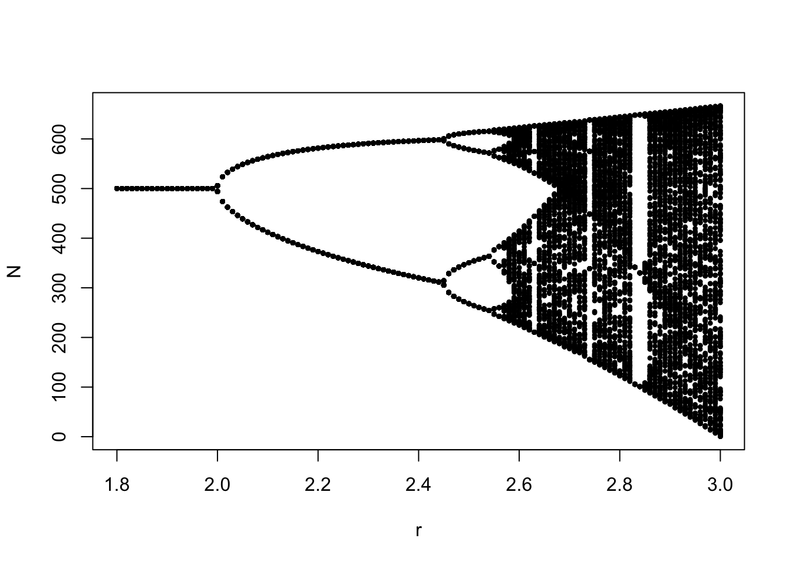

Week 4 - Discrete exponential and logistic models
Part 1 - Model the discrete logistic population growth using for loops Model: \[ N_{t+1} = N_t(1+r(1-\frac{N_t}{K})) \]
You may modify \(r\) to see the change in stability of equilibrium \(K\).
### (2) Set the parameters
r <- 1.8
K <- 500
N0 <- 10
time <- 100
### (3) Use for loop to iterate over the time sequence
pop_size <- data.frame(times = 1:time)
pop_size$N[1] <- N0
head(pop_size)## times N
## 1 1 10
## 2 2 10
## 3 3 10
## 4 4 10
## 5 5 10
## 6 6 10## times N
## 1 1 10.00000
## 2 2 27.64000
## 3 3 74.64171
## 4 4 188.93980
## 5 5 400.51775
## 6 6 543.95762### (4) Population trajectory
plot(N ~ times, data = pop_size, type = "l")
abline(h = K, col = "red")
points(N ~ times, data = pop_size)Here is a shiny app for the discrete logistic growth model.
Credit to Gen-Chang Hsu
Part 2 - Bifurcation
###### Part 2: Bifurcation curve
### (1) data setting
# intrinsic growth rate sequence
r_seq <- seq(from = 1.8, to = 3, by = 0.01)
# number of sampling
N_rep <- 200
# data
dat_plot <- data.frame(r = rep(r_seq, each = N_rep), N = 0)
head(dat_plot)## r N
## 1 1.8 0
## 2 1.8 0
## 3 1.8 0
## 4 1.8 0
## 5 1.8 0
## 6 1.8 0### (2) Run the discrete logistic model
for (lo in 1:length(r_seq)){
log_fun <- function(r, N, K){N + r*N*(1-N/K)}
r <- r_seq[lo]
K <- 500
N0 <- 10
time <- 1000
pop_size <- data.frame(times = 1:time)
pop_size$N[1] <- N0
for(i in 2:time){
pop_size$N[i] <- log_fun(r = r, N = pop_size$N[i - 1], K = K)
}
# save the data
dat_plot$N[(1 + (lo - 1)*N_rep):(lo*N_rep)] <- pop_size$N[(nrow(pop_size) - N_rep + 1):nrow(pop_size)]
}
plot(N ~ r, data = dat_plot, cex = 0.7, pch = 20)